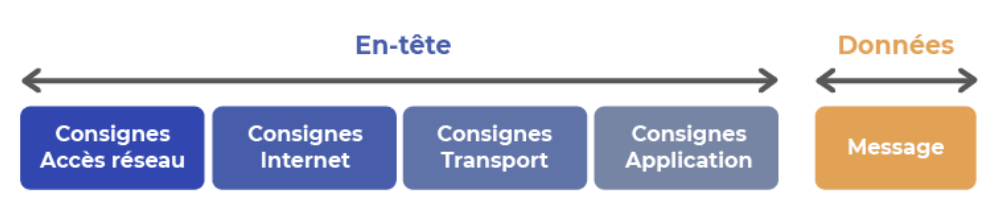
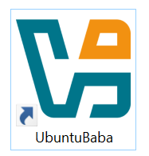
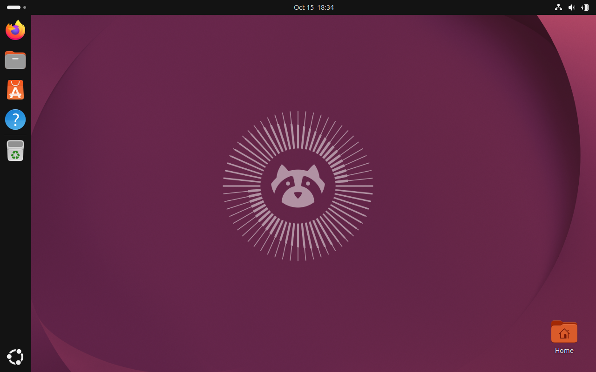
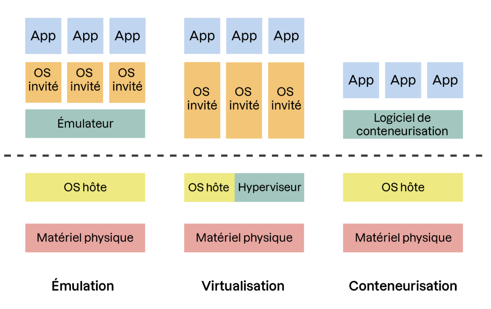

Sécurité Linux Test d'intrusion
Son objectif est de détecter vulnérabilités avant que des pirates informatiques ne les exploitent.
Compétences: Maîtriser HTML-CSS-JavaScript (comprendre fonctionnement des sites),
HTTP/HTTPS (communications entre navigateur et serveur),
Linux (utiliser le terminal),
Python (automatiser certains tests),
SQL (comprendre les bases de données),
OWASP Top 10 (connaître grandes catégories de risques de sécurité web),
Burp Suite (analyser et modifier les requêtes HTTP).
Outils: Burp Suite (intercepter et analyser les requêtes HTTP), Nmap (découvrir les ports et services exposés), SQLmap (tester les injections SQL),
OWASP ZAP (analyser la sécurité des applications web), ffuf (découvrir des chemins et ressources web), Nuclei (détecter certaines vulnérabilités connues).
Réseau TCP/IP Cours ici
Réseaux: Pr que machines communiquent (internet, streaming, mails, cloud...)
disquettes (ancêtre qui transmettait entre les 1ers ordis)
Un réseau peut être composé de réseaux plus petits
3 catégories: LAN (réseaux locaux maison ou entreprise), MAN (échelle ville),
WAN (les plus gros comme internet)
Schémas (pr les faire): "Physique" (câblages) et "logique" (comprendre l'organisation)
Structure (sch logique):
(PC,serveur et tel) <-> (Switchs
(= commutateur. Pr connecter plus de 2 machines entre elles) et routeurs
(= passerelle. Pr connecter réseau à autres réseaux))
<-> (ordi portable, tel et
imprimante)
(équipements terminaux) <-supports de communication (câbles)-> équipements d’interconnexion
<->(eq term)
Outil de simulation (= simulateur. Logiciel qui permet créer maquette virtuelle du réseau)
2 outils de simulation réseau les plus connus: GNS3 (open source et plus
complet ms plus complexe)
et Packet Tracer (réseau le plus utilisé
en entreprise Télécharger sur Cisco)
Un ordi contient une carte réseau "ncpa.cpl" (pr transformer les données
binaires à envoyer, en électricité, lumière ou ondes électromagnétiques).
Elle reçoit une "adresse MAC" unique en sortie d'usine.
Les faire communiquer grace à des "paquets"
(nécessite attribuer adresse IP)
Rm: Norme régissant les réseaux LAN et MAN porte nom de IEEE 802
(contient un ensemble de sous-normes; IEEE 802.3 (=Ethernet) pr réseaux câblés,
IEEE 802.11 pour les réseaux sans fil (WLAN)).
Problème majeur des communications sans fil est la sécurité (clé de chiffrement type WPA).
Adresse IP
Un paquet contient tjrs adresses de la "source"(A) et du "destinataire"(B) du message.
Pr courrier postal, seule adresse "destinataire" est obligatoire.
Plan d'adressage IP (pr choisir une adresse IP -> car à nous de la définir,
contrairement à adresse MAC)
172.16.254.1/8 (Masque) (adresse IPv4)
A) identifie le "réseau locale" (ici 172) tjrs identique pr un même réseau,
B) identifie la machine (le reste)
Nx format d'adresse définit "IPv6" car trop d'adresse pr un même réseau (avt "IPv4" tjrs
utilisées ds les réseaux locaux).
Rm: Essentiel de savoir convertir les nombres décimaux en "binaire"
(car machines ne parlent qu’en binaire).
Adresse IP permet identifier localisation géographique des machines (ou au moins de savoir à quel
réseau elles appartiennent, contrairement à l’adresse MAC).
On peut souvent localiser les émetteurs et récepteurs des messages qui transitent dans un réseau.
Adresse IP est tjrs associée à un "masque" (pr savoir où est limite entre identifiant du réseau et
identifiant de la machine).
Masque (de sous-réseau = subnet mask): Sert à déterminer quelle partie d'une adresse IP
correspond au réseau et quelle partie correspond aux appareils.
Routeur
Il doit avoir autant d'adresses IP que de réseaux auxquels il est connecté.
Table de routage (tableau): Ds la mémoire interne du routeur. Activer interfaces
(port physique, RJ45 par exemple).
Configurer une adresse IP à chacune des interfaces
activées.
Par convention, on a tendance à affecter au routeur une adresse en fin de plage IP.
Renseigner passerelle par défaut sur équipements terminaux.
Modèle OSI: Propose de classer les règles d'uniformisation en 7 couches
7- application, 6- présentation, 5- session, 4- transport (pare-feu, ordinateur)
3- "réseau" (routeur)
2- liaison de données (switch, carte réseau)
1- physique (répéteurs, câbles/connecteurs, hub)
modèle TCP/IP: Moins détaillé, 4 couches
3- transport (protocole TCP: "protocole de contrôle de transmission", équivalent couche 4 modèle OSI)
2- "internet" (Protocole IP: équivalent couche 3 modèle OSI)
1- Accès au réseau
TCP (Transmission Control Protocol): Etablir règles permettant transporter un message de
source à destination
(s’assurant que rien n’ait été perdu en route).
Règle: numéroter chaque paquet (qd un message est trop long pr être envoyé en un seul paquet,
il est découpé en plsrs parties, mises ds differents paquets à numéroter).
Mécanisme d’encapsulation: Règles ou consignes nécessaires pr communiquer message
sur un réseau doivent être envoyées ds un paquet.
Paquet constitué: message à envoyer + consignes nécessaires, classées par couches.

Chaque “élément intermédiaire” du réseau (routeur, switch, application destinataire), piochera ds ce paquet consignes qui lui sont destinées.
Exemple: HTTP -> protocole de niveau 7 (sur modèle OSI)
DHCP (automatisation adresse IP)
Adresses IP doit être récupérée automatiquement pr pas avoir besoin de la configurer
à chaque fois.
Protocole DHCP: Machine va y lire message pr ensuite communiquer.
Centralise les adresses IP (évite doublons et permet connaître adresses IP délà attribuées).
Il a besoin machine(s) et d'un "serveur".
Serveur DNS: facilite identification machines qui hébergent sites Internet ou
autres services réseau. DNS (Système de Noms de Domaine).
Permet associer une adresse IP à "nom(s) d’hôte" ou à "nom(s) de domaine".
Table d’allocation d’adresses IP: Tableau qui permet répertorier adresses IP attribuées
aux différents appareils d'un réseau.
Sert à organiser adresses IP et à éviter que deux appareils
utilisent même adresse (chaque adresse est associée à adresse Mac et une "date de fin de bail").
Différence serveur DHCP et serveur DNS: Un serveur peut faire les 2 ms ce sont 2 "services" différents.
DHCP → attribue automatiquement une adresse IP à un appareil.
DNS → permet de retrouver l'adresse IP correspondant à un nom de domaine ou à un nom d'hôte.
URL(adresse web): Associez un nom à une adresse IP.
C'est ni un nom d'hôte ni un nom de domaine (mais elle peut contenir les deux).
Intervient après le DHCP et avec l'aide du DNS.
Applications et réseaux TCP/IP Cours ici
Prérequis : voir les base de Linux plus bas ds cette page et de PHP ici
En-tête IP
Fragmenter (pr s'affranchir des limites de stockage): Découper un datagramme en plsrs paquets.
Chacun de ces paquet sera transporté par la trame de couche 2 et seront réassemblés sur machine destinatrice
pr reformer le datagramme initial.
La fragmentation est donc un rôle secondaire de la couche 3.
Il faut
limiter taille et nombre de paquets pr éviter erreurs (la taille minimum ns sera donné par la
MTU imposée par la couche 2)
On a besoin que de 3 fragments de l'en-tête pr réaliser la fragmentation
(IPID, Flags, Fragment Offset (=FO) )
Scan de ports: Le "port" est un concept de couche 4 qui représente l'"adresse" d'une
application sur machine.
Qd application réseau est démarrée, port ouvert(pr communiquer)
Pr protocole TCP, il y a 2 types de ports ouverts (en état "listen" et en état "established").
Qd 1 port est ouvert -> recoit une demande de connection avec segment "syn"
-> répond avec un segment "syn ack" (et si fermé avec un segment
"RST (=reset)")
En UDP (autre protocole de transport, comme TCP), même principe (ms pas de SYN SYN-ACK).
TCP : « On établit une connexion avant de communiquer. »
UDP : « On envoie les données sans établir de connexion préalable. »
Rm: Linux ss-antp (pr voir ts les ports ouvert).
Piratage à effectuer sous "Linux Debian", en tant que root (mais attention à légalité)
# netstat -an (pr voir si port ouvert)
# netstat -anpe (avec détails sur le PID,
utilisateur et le processus)
# netstat -antp (pr ports TCP seulement)
Nmap (outil qui permet de scanner de façon automatique toute une plage)
L’idle scan: Technique qui permet de scanner une machine en se faisant passer pr quelqu’un d’autre.
En-tête TCP
Il fait 20 octets (comme l’en-tête IP) ms il comporte svt des options.
premier numéro de séquence ne vaut pas réellement 0, il vaut une valeur aléatoire
ISN (Initial Sequence Number)
Rm: L’ISN n’a pas tjrs été aléatoire et cela a causé de grosses failles de sécurité
En cas de segment TCP perdu, chaque machine s’en rendra compte et sera réémis.
C’est ce qui permet à TCP d’être qualifié de "protocole fiable sans perte de paquets"
(et même sans perte d’octets)
à l’inverse du protocole UDP (qui ne garantit aucune perte
de paquet). La contrepartie à payer est la lenteur de ce protocole par rapport à UDP.
L'attaque de Noël: Se faire passer pr une autre machine
vis à vis d'un serveur sur internet (IP Spoofing).
Flooding: Submerger une machine pr l'empêcher d'être capable de répondre
(avec de multiples SYN).
Messagerie
Elle s'appuie sur 2 protocoles (SMTP (envoyer et recevoir mail sur serveur) et IMAP (récupérer mail sur serveur pr les lire)) Rm: Sous Linux
Installer serveur SMTP: # apt-get install postfix, # ls etc/postfix, # telnet localhost 25, Hello Toto.com, mail from: Toto@Toto.com, rcpt to: root@mondomaine.cocal, data, Subject: Salut les amis!, C'est cool d'écrire des mails manuellement, . , quit.
Configurer Postfix:
Documentation
~# ls /etc/postfix , dynamicmaps.cf main.cf makedefs.out master.cf.proto postfix-files.d post-install,
dynamicmaps.cf.d main.cf.proto master.cf postfix-files postfix-script sasl
Fichier main.cf contient ts les paramètres de configuration
que nous voulons indiquer au serveur (modifier ceux qui ns intéressent).
Voir ts ces paramètres avec commande "postconf".
Le port par défaut du protocole SMTP est le port 25 (se connecter dessus avec telnet).
Créez utilisateurs virtuels en ligne de commande
Méthode 1: Dans le fichier main.cf, faire boîtes aux lettres virtuelles.
Rm: / (à la fin commande) important. Indique recevoir mails ds un
répertoire (et non dans un fichier). Ts nos mails seront ds des fichiers séparés ds ce répertoire.
Compiler ensuite le fichier vmailbox.
Méthode 2: Via une bdd SQL
Installer package MariaDB, se connecter à MySQL, créé database Messagerie ;, créer user,
commande "flush privileges" (pr que les droits soient pris en compte), quit.
Puis créer messagerie.sql, la remplir. Puis installer les "packages".
Installer serveur IMAP: On choisira Dovecot (plus sécurisé, robuste,
avec bcp de fonctionnalités). configurer port d'écoute (le 143), modifier
mail_location.
Puis on ajoute "packages".
Testez la configuration serveur IMAP (avec Telnet).
Interface pr lire mails: client de messagerie
(Outlook, Mail ou Thunderbird...) ou
webmail (site web installé svt directement sur serveur
de messagerie. Permet de consulter ses mails en ligne, comme Gmail, Yahoo ou Outlook.com).
Installer serveur web Ngninx (si on veut webmail) + package Nginx
Vérifier port écoute, après avoir modifié et redemarré le serveur (#systemctl restart nginx) tester
que php est bien interprété par Nginx (créer une page php)
Installation du webmail: Rainloop avec 2 packages php-curl et php-xml, créer un dossier "rainloop" (avc mkdir), puis modifier interieur rainloop sur navigateur (en y mettant l'adresse)
Puis créer une interface web pr communiquer avec Linux (pr configurer services installés).
Linux Cours ici
Système d'exploitation: Programme à installer sur ordi et qui va agir comme chef d'orchestre
(super logiciel interface entre ns et ordi).
"Unix" (créé par Richard Stallman ) est l'ancêtre de Linux (créé par Linus Torvalds).
Permet de reprendre contrôle de son ordinateur.
Il est monolithique ("noyau" avec blocs de code unique)
et modulaire (ce noyau est
organisé sous forme de "modules" (blocs de code qui n'impacte pas le système)).
Il est diffusé sous "licence GPL" donc gratuit (= "open-source).
Pr télécharger ce noyau (avec code incompréhensible), existe des progammes
packages qui sont compatibles entre eux.
Un ensemble de package est appelé "distribution" (certaines sont orientées
serveur, sécurité, multimédias ou poste de travail).
Ubuntu (distribution orientée poste de travail):
Attention à ce que je fais !!!
Virtualisation (simuler un ordi ds un ordi): Outil "VirtualBox"+++ (le moins risqué)
Télécharger VirtualBox ici
ISO (fichier contenant notamment les éléments nécessaires pour installer Ubuntu).
Je peux le mettre sur une clée USB.
ou
Clicker son raccourci pr commencer
ds son installation virtualisée

Télécharger Ubuntu
Rm: Sur téléphone, plus facile d'installer Linux sur Android que sur Apple.
Bureau Linux (interface graphique)
Je dois le configurer moi même (pas comme Windows ou Mac préinstallé).
Gnome (Livré par défaut avec la distribution Ubuntu; Moderne mais demande bcp de ressources).
Autres bureaux Linux:
KDE (plus proche de l'ambiance de Windows).
XFCE (minimaliste, idéal pr ordi obsolette car consomme très peu de ressources).
Ubuntu installé (via VirtualBox)
Il possède un "store" App Center (comme Play Store de Samsung)
Mais on utilise plutôt son "terminal".
Faire une "capture d'écran":
Pr récupérer l'image sur "Linux" : Appuyer sur touche "Impécr"
Pr récupérer l'image sur "Windows": Utiliser VirtualBox (écran, capturer écran)
Mettre à jour les "logiciels" (icones comme ds le bureau windows) si besoin:
connexion internet, le "A barré" (surtt les mises à jr automatique de sécurité)...

Utilisation avec les "icones" Clicker sur celle en bas à gauche (ouvre plus le menu)
Utilisation avec le terminal: taper terminal ds la barre de recherche proposée (après avoir clické sur même icone en bas à gauche)
lignes de commande:
$ sudo apt-get update (pr voir quels logiciels veulent mises à jour)
$ sudo apt-get upgrade (pr mettre à jour la distribution) puis appuyer sur "oui"
Rm: Commande "sudo" permet d’obtenir droits d’administration
(pr tâches qui les nécessite) = élévation de privilège.
$ apt-cache search nomdulogiciel (aller chercher lociciel qu'on veut)
$ sudo apt-get install nomdulogiciel (pr installer ce logiciel)
Rm: On fait "tab"(touche avec 2 flèches inversées) pr acceder à "ok" ou "yes"
si un autre écran s'ouvre par dessus le terminal.
$ df -h (lister appareils qui sont branchés à ordi)
$ lsblk (manière dont ces appareils sont connectés)
$ ip a (pr voir differentes cartes réseau et leurs configurations)
$ ss -tuln (affiche les ports réseau en écoute)
Les meilleurs navigateurs pr respecter vie privée: Firefox, Edge, Brave (le lion)
Rm: GoogleChrome est le plus mauvais (mais ok pour déboguer des sites).
Important de passer en revue ttes options de protection de la vie privée et de la sécurité,
que propose "Firefox" par exemple.
Eviter de garder les "historiques" sur les appareils.
Messagerie: Linus utilise "Thunderbird"(fourni),"Evolution"(le plus ancien), "Geary"(minimaliste),"ProtonMail"(très sécurisé)...
Éditeur de documents: Microsoft Office (avec Word, Excel...) est payant sous Windows.
Equivalents Linux: "Open Office"(1ere suite historique), "LibreOffice
"(suite de référence ss Linux, plus svt mise à jour).
LibreOffice -> Writer(ttt de txte), Calc(tableur), Impress(outil de présentation),
Base(outil de BDD).
Extension standardisée ouverte: ¡ Format.odf (format interopérable -> existera tjrs).
Périphériques de stockage (clée USB, disque dur externe...) :
Mettre un "driver" (pilote) si pas reconnu.
Partage de connexion (pr tel): Avec "Network Manager" (gestionnaire de réseau), une icone.
Adobe 1ere Pro en gratuit:
Création graphique: Gimp (retouche d'images comme Photoshop),
Krita
(pr dessin (mais sur KDE)), Inkscape (redimensionner images sans perte de qualité (comme SVG)),
Audiovisuel: VLC, MPlayer (lecteurs vidéo), Pitivi et KDENLIVE (montage vidéo), LMMS (musique)
Rm: Lightworks (logiciel "propriétaire" de montage vidéo)
Développer sous Linux:
Environnements de devpmt (IDE): Kate, Geany, Eclipse, Atom
(top ms arrêté en 2022), VS Code (n'est qu'un "éditeur de code" mais complet)
Environnements des languages: Java, Python
Dev web: Architecture Lamp (Linux, Apache, MariaDB (anciennement MySQL), Php (marche aussi pr Perl ou Python)),
avec XAMPP (Application qui regroupe directement composants
(WAMP (pr Windows) et MAMP(pr macOS))).
Format disque dur: exFAT (compatible avec les 3 systèmes windows, mac et linux (Fat32 compatible aussi ms limité à 4 Go))
Administration Linux Cours ici
Terminal: Aujourd'hui ce sont des "émulateur de terminal"(= terminal virtuel. Car plus besoin
de l'avoir à part)
PuTTY (sous Windows), Terminal (sous macOS),
xterm (sous Linux).
Avantages: Se connecter à distance et lancer plrs émulateurs de terminal en même tps.
Linux propose 7 terminaux "physique" (en face du serveur, pas à distance) ctrl alt F1 (F2...F7)
et qd on sera à distance, "émulateur de terminal" (terminal à lancer sur poste de travail)
On travaille donc sur 2 terminaux (ne pas les confondre. Copier-coller entre les 2
fonctionnent pas).
Rm: Console = terminal
Passer par un "logiciel" pour émuler (ou simuler) l'équipement terminal physique et ttes ses
fonctionnalités:
protocole VNC (Virtual Network Computing),
RDP (Remote Desktop Protocol)
Autres "émulateurs" sous Linux (que xterm): GNOME Terminal, Konsole (de KDE), xfce-terminal, urxvt
Shell (interpréteur de commandes)
Il sert à exécuter ce qu'on écrit ds un terminal (peut fonctionner à l'intérieur des deux
sortes de terminaux)
Lancé juste après l'authentification sur un terminal. Pr saisir des commandes et afficher
leurs résultats.
Dépend du système d'exploitation (Bash (linux),
Bourne Shell, Kornshell, C-Shell)
Bash avantages: Auto-complétion (TAB), Gestion des signaux (CTRL+C), Terminaison des
commandes (donne les codes de sortie 0 ok, 1 problème!)
basti@nom_machine : ~$ (=prompt) :
~ (pr dire qu'on est ds répertoire personnel de l'utilisateur)
$ (pr dire utilisateur non privilégié) Rm: Avec le compte root, le caractère
serait un #
/w (indique le repertoire ds lequel on se situe)
Elle est stockée ds un fichier ds une variable gérée par le shell Bash (cette variable est
nommée $PS1.)
Rm: On utilise echo aussi bien en Bash (shell) qu'en PHP pour afficher du
texte.
ls: permet de lister le contenu d’un répertoire. ls -l (plus développé)
-t (les plus récent), -t-r (= -ltr, les plus anciens), -lRt
(tt le contenu), -h (par taille)
On a les "options" (le premier bloc de lettre) puis les
"arguments" (2eme bloc) Ex: $ ls-lrth rep1.
type (récupérer des informations concernant une commande)
file / (pr récupérer des information sur un fichier), * (ensemble du
répertoire)
cd (changer de répertoire), && (et), id (information sur
compte utilisateur), PATH (le répertoire courant de Shell),
help (liste
des commandes interne), id --help (appel en externe), man (manuel plus
complet)
history (affiche historique de commande. Rm: On peut la rappeller ensuite par
son numéro !numero), message (avec ctrl r) (pr retrouver un ancien
message ds mes commandes)
Rm: Un alias est un raccourcit pr les commandes svt utilisés
Arborescence (fichiers)
Norme FHS
Répertoires FHS: /boot (noyau linux), /bin (commandes),
/etc (fichiers de configuration)
/Root: Compte super utilisateur pr tâches d'administration (n'en fait pas partie pr sécurité)
donc ne pas créer de repertoir Root. /home non plus (fichiers personnels)
/proc /sys (vitrines virtuelles qui n'existent pas sur disque dur)
$ cat (pr afficher contenu, flux d'un fichier)
$ less (lire un fichier page par page)
Canaux: stdin, stdout, stderr (utiliser > et < ,ou >> et <<) Ils permettent de rediriger la sortie d'une commande vers un fichier.
Le fichier /etc/pam.d/login permet de gérer le processus d'authentification sous Linux
Le fichier /var/log/messages contient les traces du système Linux
Les commandes grep,sed et awk permettent de filtrer les flux de données
Le fichier /etc/os-release contient les informations sur la distribution Linux
Le pipe de Linux permet de chaîner les commandes Linux grâce à la redirection des canaux
Les commandes sort et cut permettent de manipuler des flux de données sous Linux
vi est l'éditeur de texte en mode terminal de référence sous Linux
emacs intègre des extensions en langage lips donc plus d'un simple éditeur de texte
nano est un éditeur pr faire la transition depuis le monde Windows
Les fichiers sont représentés dans le noyau Linux par des structures nommées inode
Les opérations classiques de Copie/Déplacement/Suppression de fichier sous Linux sont exécutées
sur les inodes avec les commandes cp/mv/rm
Les liens durs/symboliques sous Linux représentent des pointeurs entre inodes et sont gérés avec
la commande ln
Droits sur les fichiers
Sont considérés comme fichiers sous linux: périphériques et représentation des
processus (en plus des données).
"Sous Linux, tout est fichier."
Donc le droit des fichiers concerne plus que juste des "fichiers".
DAC (Discretionary Access Control): Gestion des droits qui sont la propriété soit d'
un compte utilisateur (compte propriétaire), soit d'un groupe propriétaire,
soit des comptes utilisateurs et systèmes (plus large).
La commande utilisée est: chmod (pr la gestion des droits)
Le contrôle d'accès sous Linux est discrétionnaire (DAC)
Les droits d'accès sont donc définis pour 3 entités : le propriétaire de l'objet,
le groupe propriétaire et tous les autres comptes utilisateurs et/ou système.
Les droits d'accès sont également définis avec 3 bits : READ, WRITE et EXECUTE
Au total, il faut 9 bits (READ, WRITE et EXECUTE x 3 entités) pr définir les droits
d'accès d'un objet sous Linux
Ces droits sont exprimés en puissance de 2 avec les valeurs 0, 1, 2 et 4 offrant une
combinaison unique, par exemple 755
Les commandes chown/chgrp ("change owner"/"change group") permettent de changer le
propriétaire et le groupe propriétaire d'un objet
SetUID est un droit spécial permettant d'exécuter un fichier avec les droits de son
propriétaire
Sticky Bit est un droit spécial permettant de gérer des espaces partagés
Configurer cartes réseaux
Chaque machine Linux possède un nom d'hôte (hostname) qui permet de l'identifier sur un réseau.
Commandes: hostname (Afficher le nom de la machine), hostnamectl (
Afficher les informations du nom d'hôte),
sudo hostnamectl set-hostname serveur1
(modifier nom machine), cat /etc/hostname (consulter nom enregistré)
Le hostname permet d'identifier facilement un serveur.
Le fichier /etc/hostname contient le nom utilisé au démarrage.
Chaque serveur doit idéalement avoir un nom distinct.
Détecter les cartes réseau
Avant de configurer le réseau, il faut vérifier que Linux reconnaît les interfaces réseau.
Une interface réseau permet à un ordinateur de communiquer avec d'autres équipements.
Commandes: ip link show (Afficher les interfaces réseau), ip a (
Afficher les interfaces et leurs adresses IP), dmesg (Consulter les messages du noyau),
ls /sys/class/net (Lister les interfaces réseau détectées)
Rm: Linux doit reconnaître la carte réseau avant de pouvoir la configurer.
La commande ip permet de gérer les interfaces réseau (remplace progressivement "ifconfig").
ip addr (afficher adresses IP), sudo ip addr add 192.168.1.10/24 dev ens33
(ajouter une adresse IP), sudo ip link set ens33 up (activer une interface),
sudo ip link set ens33 down (désactiver une interface)
Important : Les modifications réalisées avec ip sont temporaires et disparaissent généralement au redémarrage.
Pour conserver une configuration réseau après un redémarrage, il faut utiliser une configuration persistante :
Soit distribution "Debian et ses dérivés" soit "Red Hat et ses dérivés".
Configurer les routes et les passerelles, les DNS (pr traduire un nom de domaine en adresse IP,
noms plus simple).
La commande ping est un complément pratique pour vérifier la connectivité.
SSH pr se connecter à distance
SSH (Secure Shell) est un protocole permettant de se connecter à distance
à un serveur de
manière sécurisée
(permet administrer un serveur Linux à distance, exécuter des commandes sur un serveur,
chiffrer les communications, authentifier les utilisateurs).
Grâce à SSH, on peut accéder à son terminal sans être physiquement devant lui.
SSH utilise généralement le port TCP 22 et chiffre les communications entre le client et le serveur.
Sous Linux, le logiciel OpenSSH permet d'utiliser le protocole SSH.
SSH permet de s'authentifier sans saisir le mot de passe du compte à chaque connexion
(clé publique et clé privée. La clé privée reste sur le client, tandis que la clé publique est
installée sur le serveur.).
Commandes:
ssh utilisateur@192.168.1.10 (Se connecter à un serveur)
ssh-keygen -t ed25519 (Générer des clés SSH)
ssh-copy-id utilisateur@192.168.1.10 (Copier la clé publique sur le serveur)
sudo systemctl status ssh (Vérifier le fonctionnement du serveur SSH)
...
Environnement de travail (Virtualisation) Cours ici
VM (machine virtuelle): Pr éviter d'avoir à acheter un MAC si on est sur PC par
exemple. (J'ai utilisé VirtualBox pr Linux plus haut)
Besoin que de 4 ressources: Processeur, Memoire vive, Espace de stockage disque, Accès réseau
Il faut un hyperviseur sur une machine "hôte". Hyperviseurs de type 1
(= natif. Pr grosses architectures réseaux d'entreprises. On "reformate" le PC + svt licence entreprise)
et de type 2
(besoin que de quelques machines. Ex: VirtualBox)
virtualisation : Créer un ordinateur virtuel à l'intérieur d'un ordinateur physique.
Fonctionne grâce à un hyperviseur
émulation : Reproduire le fonctionnement d'un autre matériel ou système informatique
(grace à un émulateur)
conteneurisation : Consiste à isoler une application et ses dépendances dans un
environnement appelé conteneur.
En savoir plus sur la conteneurisation (avec "Docker") ici
Par simplification de langage, la virtualisation, l’émulation et la conteneurisation sont très
souvent regroupées sous le terme unique de virtualisation (car fait plus ou moins les 3).

On peut créer plusieurs VM sur le même hyperviseur.
Insaller Mac sur VirtualBox pas forcément possible.
La virtualisation ne signifie pas qu'on peut installer n'importe quel système d'exploitation
sur n'importe quel ordinateur.
Il faut tenir compte de la compatibilité matérielle et
des licences.
Test d'intrusion (pentest) web Cours ici
Plateforme d'entraînement en Hacking et sécurité de l'information : Root Me
ici
Podcast à écouter : Hack'n Speak (sur la cybersécurité) de Martial mpgn (en francais).
Source d'inspiration ici.
À suivre :
Def Con ,
Black Hat ,
SSTIC (en francais) ,
Hack in Paris (en francais) .
Audit de sécurité appartenant à la famille de la "sécurité offensive" (= offsec).
Tester techniquement ds un tps défini tt ou partie d’un système d’information pr en relever
maximum de vulnérabilités
(afin que celles-ci puissent être corrigées avt d’être exploitées
par un attaquant).
3 différents types de tests d’intrusion (le pentester se met ds la peau de...):
Boîte noire (black box) -> Attaquant externe (peu de connaissance de l'application)
Une simple URL, l'adresse IP du serveur cible, le site vitrine de l'entreprise.
Boîte grise (grey box) -> Utilisateur malveillant
(connaissances partielles de l'application)
vulnérabilité dans la partie authentifiée, voire dans la partie réservée aux administrateurs
Boîte blanche (white box) -> Développeur (connaissances approfondies de l'application)
être le plus exhaustif possible
bug bounty -> Pentester payé au tps passé.
red team -> Entrer sans se faire repérer (plus complexe). But :
Tester la réponse de l’entreprise face à une attaque avancée.
Qualification PASSI : Obligatoire pour réaliser des tests d’intrusion sur les
systèmes d’information d’importance vitale (SIIV) (pas pour les autres systèmes et applications).
ANSSI : Organisation donnant recommandations de bonnes pratiques.
1) Cadrer son intervention à partir des objectifs du test
Réunion avec commanditaire (présentation, planning, budget, si on peut travailler à distance via un compte VPN SSL).2) Préparez environnement de travail
Outils de test d’intrusion (ne sont que des "accélérateurs") -> kali , Parrot OS , Commando VM , Exegol .Installer "Kali" ds VM (ex: Virtualbox) sur notre hyperviseur.
Doc installation
(puis c'est comme un système Linux standard, avec les mêmes commandes de base (cat, ls…))
Rm: On peut développer ses propres outils
Faudra documenter tt ce qu'on fait
(prendre des notes (word, powerpoint, fichiers Markdown...) et des captures d'écran)
3)Repérage (récupération d'informations sur la cible)
Moteur de recherche "Google"
a)Reconnaissance passive
Google Dorks (= Google hacking) site:spterrain.fr ext:pdf “pass”, OSINT theHarvester , Recon-ng (informations publiques).dark web (espace accessible avec VPN spécifique).
deep web (tt ce qui n’est pas indexé par moteurs de recherche, notamment car un compte est nécessaire pour accéder aux données).
Ex : identifiants encore valides ds des bdd qui ont fuitées ou ds dépots de code publiques...
b)Reconnaissance active
Avec des outils comme Amas et via l'analyse des enregistrements DNS et des certificats TLS...Rechercher si il y a des cibles connexes (plutôt que cible principale).
(Poubelles, porte à porte, conversations entre employés...)
Faire énumération de noms de domaine et de sous-domaine, à partir d’une liste que j'ai définie,
scraping (= extraction automatisée de données) de la cible principale, pour trouver des
références à des sous-domaines dans le contenu de la cible
voir OWASP et
Outil AMASS
(disponible dans Kali par défaut),
lecture des certificats TLS (Transport Layer Security), qui sont parfois utilisés pr
plusieurs sites,
registres whois (= Qui est ? Protocole permettant de consulter des informations
d'enregistrement concernant un nom de domaine ou une adresse IP),
historique DNS
Parfois il faudra changer le "scope" (élargir le périmetre de recherche, serveurs à analyser en plus).
En discuter avec le commanditaire (et avoir autorisation écrite).
c)Scan de port
(fenêtres ouvertes?) Services d'administration (comme SSH ou Tomcat)On va chercher ds SMB ,HTTP ,HTTPS
avec Nmap (le plus connu) ou naabu , Masscan .
Scan de vulnérabilité
Trouver les failles derrière chaque service (version d'un serveur obsolète, possibilité d'administrer sans saisir de MP).Scanners de vulnérabilités (pr faire gagner du temps, mais svt cher) : OpenVAS (de Greenbone) (Open Source), Nessus , Qualys VM , Nexpose (de Rapid7) .
Rm: Un exploit est un code malveillant envoyé au service pour exploiter la vulnérabilité,
et gagner par exemple des droits supplémentaires ou simplement un accès au service.
d) Recul et interprétation des résultats
Rm: Attention! Plus on est agressif sur un scan (plus on envoie de paquets), plus on risque de fausser les résultats.Tester les vulnérabilités authentifiées (pr vérifier que serveur est réellement vulnérable. Ce sont parfois des faux positifs).
4) Vérifiez la présence et la qualité du chiffrement des échanges
Chiffrement de bonne qualité : Qualité du certificat (correspond au badge de l'agent d'acceuil
de la banque),
protocoles supportés (manière dont agent d'acceuil se comporte qd un client se présente à lui),
suites de chiffrement autorisées par le serveur (laxisme de l'agent d'acceuil qd le client
(ou un intru) tente de négocier une prise en charge moins sécurisée)
Décryptage (Qd on ne connaît pas la clé de déchiffrement et qu’on doit la
retrouver, sinon déchiffrement).
Pr contrôles de cryptographie : outils
SSLlabs ,
SSLscan ,
testssl.sh
ou les scanners de vulnérabilités (ci-dessus).
On appelle protocoles de chiffrement les différents protocoles qui permettent de sécuriser
les flux (par exemple HTTPS).
Ces protocoles sont :
SSL v2 ; SSL v3 ; TLS v1.0 ; TLS v1.1 ; TLS v1.2 ; TLS v1.3 .
Les 2 derniers sont vulnérables à
Drown et
Poodle
(qui permettent de décrypter communications interceptées).
5) Proxis d'interception (on entre ds la banque)
Se familiariser avec l'application à attaquer (30 min à 1h en fct de sa complexité)
Que ferait l'attaquant (regarder les URL/URI pour se donner des idées)
Noter les champs et fonctionnalités qui nous paraissent intéressants.
F12 pr voir données échangés entre appli et nous.
Pour aller plus vite -> proxy d'interception web :
Burp Suite
(version gratuite "community") et
ZAP (de la fondation OWASP) .
sudo apt install burpsuite -y
On peut utiliser une extension de navigateur Proxy Switchy Omega .
Le "proxy" va générer, pr chaque site en HTTPS que nous visitons, un certificat SSL à lui (le configurer pour, avant).
Intruder permet automatiser tâches, notamment des attaques par force brute (trouver clé ou MP)
ou des attaques par dictionnaire (trouver MP avec noms et chiffres courants) Pr attaque par dictionnaire .
Autres outils : ffuf , dirbuster .
On peut trouver des pages ou endpoints d’API cachés
(en cartographiant l’application cible avec un outil de crawling ou spidering, puis en complétant cette cartographie avec une énumération à partir d’une liste prédéfinie).
Pr les trouver, avoir outil pour automatiser énumération, et une liste adaptée à la cible (une liste PHP pour une application PHP, et pas une liste Java, par exemple 🤦♂️).
6) Attaque
On a déjà tous les outils en main. Plus qu'à dérouler et tester ttes les requêtes qui
nous semblent pertinentes.
Principales vulnérabilités sur une application web (les plus fréquemment identifiées)
Top 10 actualisé .
Cours pr neutraliser les 10 principales
injections XSS
Vont avoir un impact sur le client de l’application
ingénierie sociale (="social engineering") rassemble techniques de manipulation
psychologiques
(utilisées pour obtenir des informations ou faire faire quelque chose à une cible
comme cliquer sur un lien). Hameçonnage (="phishing") par exemple.
3 types d'injections XSS : XSS réfléchies, stockées (ou persistantes), DOM-based.
Une XSS permet d’injecter du code HTML et JavaScript
(Un paramètre est vulnérable aux injections
XSS dès lors que l’application renvoie tel quel le contenu qui lui a été envoyé).
Préconiser la mise en place d’un WAF (Web Application Firewall)
Injections SQL
Permettent récupérer bdd (avec id, MP, hashs (= empreinte numérique))
et même
prendre le contrôle du serveur (via une Remote Code Execution, ou "RCE"
(exécution de code arbitraire à distance))
Principe de l’injection SQL consiste à modifier la requête SQL qui va être envoyée
(en injectant des caractères spéciaux SQL).
3 types : Error-based, Boolean based, Time-based.
Prise du contrôle du serveur
Lecture de fichiers arbitraires sur le serveur : Path Traversal (Directory Traversal),
Local File Inclusion (LFI).
RCE (prend le contrôle à distance. grave++)
Se protéger: accepter que les types MIME de fichiers dont nous avons besoin dans cadre de
la fonctionnalité, et de faire cette vérification côté serveur;
Effectuer une analyse antivirus sur les fichiers déposés ;
Restreindre le contexte d'exécution de l’application et donc de dépôt des fichiers (chroot).
Robustesse de l’"authentification"
Fait de vérifier que quelqu’un est bien celui qu’il prétend être.
Qd un facteur secret entre en jeu (comme un MP). Sinon, on parle d’identification.
Habilitation, c’est le fait de vérifier que quelqu’un a bien le droit de faire ce qu’il demande.
Types: bypass d’authentification, credential guessing , vol de sessions.
Un "cookie" peut être : forgé ; volé ;
utilisé à votre insu, dans le cadre d’attaques CSRF (cross site request forgery).
Attaques CSRF: "forger" une requête (créer une requête valide avec tous les bons
éléments), et utiliser ce mécanisme pour piéger un utilisateur et lui faire faire des actions
à son insu.